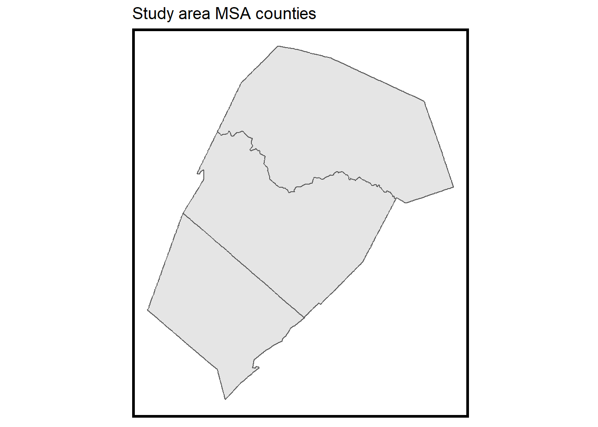
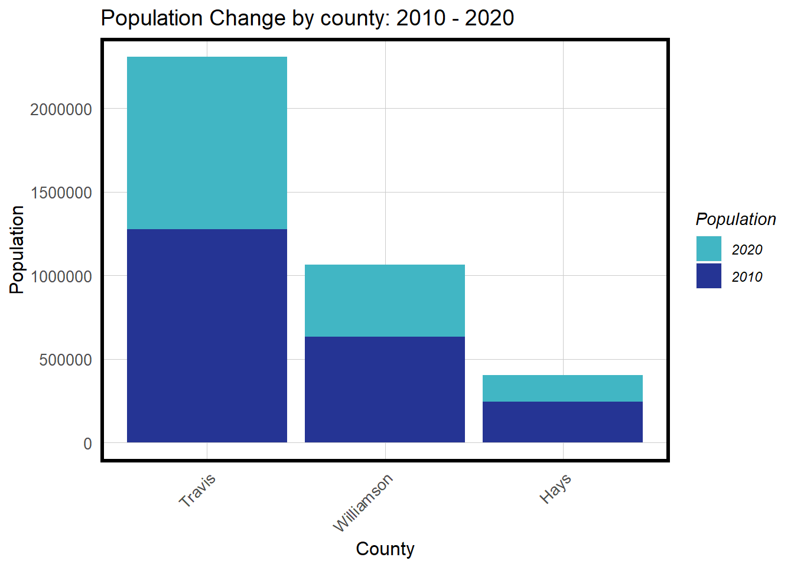
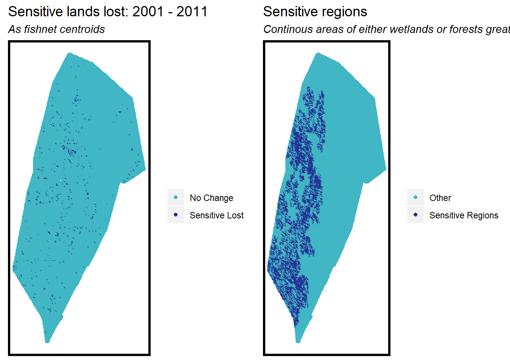

CPLN 675 Final Project: Urban Growth Modeling
Sara Mattio
5/13/2020
Building the Logistic Regression Model
The goal of this project is to forecast urban development in 2020 using a linear regression model and spatial statistics in R. Urban growth is a result of multiple variables, such as added population, growing industries that attract new residents, available lands, existing urban patterns, etc. To create a robust model that predicts the probability of a geographic unit, such as a defined cell, to transform, we need to incorporate relevant variables and test for their cumulative impact on the model accuracy. If the model proves useful (by cross-validation and reviewing the confusion matrix data), It will assist in the region’s next large-scale comprehensive planning process.
Austin, Texas
Austin, Texas, is the 11th most populated city within the US (as of 2014)1, and the fourth-largest city within Texas. Since the expansion of Austin’s tech sector and growing university, the city has experienced substantial population growth between 2000 and 2010, and this growth is expected to continue in the future. Austin was selected as the case study for this model because it combines significant urban growth with available expansion (undeveloped) areas within its MSA counties, as will be reviewed in the land cover section.

For this purpose, the model utilizes three MSA counties: Williamson, Travis, and Hays (from north to south). Although Austin’s MSA includes several other counties, these counties were selected because they encapsulate the majority of Austin’s urban density.
Before presenting the regression model and the two prediction scenarios (supply-side and demand-side growth), it is important to understand each variable used within the model.
Variables
Land Cover
The regression model aims to predict urban growth using a “fishnet” of cells in raster form. Therefore, our dependent variable must be a version of counted or aggregated cells (or pixels) that experienced urban change.
To create the dependent variable, the developed areas within 2011 land cover data were first substracted from 2001 development. This data was derived from the National Land Cover Database provided by the United States Geological Survey (USGS). This output was then reclassified to produce a raster that includes only NA and 1’s, using both ArcMap and R.

Observing the plot, it is apparent that these cells are clustered around the existing development while leaving the margins with a relatively low amount of change. This is a typical growth pattern and one we would expect around metropolitan areas.
Next, a fishnet of 500*500 foot cells was created. The purpose of using a fishnet for this model was to be able to aggregate features from several different datasets into one layer, where it could then be used to make conclusions about each cell. The resulting fishnet is as follows:
After creating the fishnet, the land cover raster data is then aggregated into the fishnet. The resulting maps below show land cover classifications in the Austin MSA from 2001 data:
Urban development is clustered at the center, while the northeast part of the MSA is mainly farmland. Much of the western region of the MSA is covered in forest and throughout the entire area there are scattered ‘other undeveloped’ land cover.
Population Change
If an area experiences change in developed land, it is likely that population growth also followed. Therefore, the next feature used in the model is 2001 and 2011 population census data. The quantile maps of population in 2001 and 2011 present a significant change in the outer ring of the city, with almost all parts experiencing some level of population growth. Specifically, we can see that the northeast region expanded and some areas to the east of the city increased significantly.

Spatial Lag
It is assumed that future development has a higher probability to occur in proximity to the existing urban developed area. Spatial statistics can measure this probability using spatial lag. In this model, a variable was created that measures the distance to existing urban land cover and gives higher weights to nearer cells. The result is seen in below. Notice how areas with the highest probability are similar to areas of developed land cover.

Distance to Highways
In the United States, urban growth patterns are commonly reflected in highway expansion. This is especially true in less dense areas, where highways are critical in connecting access to the city. We can see that the southwestern and northern MSA areas are not in proximity to any highway (and therefore have large segments in dark blue). In general, it seems the city is well-connected, with many areas in yellow and light blue.
Final Dataset
Before the model is built, it is useful to review the aggregated data to get a better understanding of it and observe potential trends. In the first plot (left), it is clear that new development is more likely to be closely located to highways compared to undeveloped areas. The results of the spatial lag plot (right) are less distinct but it can be observed that new development is located closer to existing development, compared to undeveloped areas where the outcome is less probable.

The effect of continuous and factor variables on population change are plotted, then grouped by developed and undeveloped (no change) cells. In both cases, a differenced is immediately apparent. As expected, the population change is visibly higher within cells that were developed.

Predicting Change
Finnaly, the model is built, refined, and tested. Six models were initially created, adding a variable to each. This method allows for the review of the impact of each additional variable when comparing the R-squared values of the models. Evaluating those models, there was a slight drop in “goodness of fit” from models 4 to 5. Finally, the 7th model created an ideal goodness of fit, using the population data (as in model 4) and the highways variable. It resulted in the best fit and highest R-squared value, as seen in the chart.
Model7 <- glm(lc_change ~ wetlands + forest + farm + otherUndeveloped + lagDevelopment
+ pop_2000 + pop_2010 +
distance_highways,
family="binomial"(link="logit"), data = datTrain)The plot below shows the predicted probabilities based on Model 7 when using a .5 (50%) threshold. Only a small number of predicted probabilities for development change are greater than or equal to 50%.

At the next stage of reviewing the model with a confusion matrix, a smaller development classification threshold is employed.
| Variable | Sensitivity | Specificity | Accuracy |
|---|---|---|---|
| predClass_05 | 0.76 | 0.85 | 0.85 |
| predClass_17 | 0.36 | 0.97 | 0.96 |

After testing two thresholds (5% and 17%) and their respective sensitivity, specificity, and accuracy values (above chart), the higher threshold is selected for the model’s confusion matrix. In this specific case, it is better to have a model that is less precise but generally predicts where new development can happen. As seen in the plot, there are more negative values (with a higher true-negative rate) using the 17% threshold.

1. Demand-Side Change
The goal of this model was to predict for two types of outcomes: demand-side change and supply-side change. In demand-side scenario, the model will approximate 2020 Population Projections for Austin, distribute the ‘new’ population among census tracts in the region, and predict where new development will occur in 2020.
The first stage is predicting population for the three MSA counties. A new data frame is created that includes 2010 population counts and 2020 projections for each county. Travis county (that includes Austin’s center) has the higest projection, with Williamson and Hays following. Hays county contains higher forest cover which may result in the diversion of growth to Williamson or Travis Counties.

After assessing 2020 population, development demand can now be predicted.
Demand Prediction
The highest prediction quantile (dark blue) is around highways. In general, the higher rates of growth are within Travis and Williamson Counties.

Allocation
The next step is to try to estimate and recommend where new development can and should be allocated. In order to do so, three parameters are reviewed: sensitive land cover, destruction that already occured in the last decade, and demand/availabilty parameters for development in each county. Observing the change from 2001 to 2011, the first map shows areas where forest or wetland was lost. Then, land cover with continuous use of either forest or wetland as of 2011 is plotted, resulting in a map of sensitive regions in the area (right). The resulting distribution of sensitive regions in the map can be explained by similar patterns of clustered forest land cover from 2001 and 2011 Land Cover data.

Finally, several key indicators are plotted by county. The allocation chart allows the user to navigate future development needs and restrictions. All three counties have some development demand (although Hays is the lowest), and all three have significant undeveloped areas. However, Hays County exhibit high levels of sensitive areas and, coupled with low demand, is the least suitable for future development.
To better understand the spatial opportunities and restraints for each county, some of these variables are mapped in a more comprehensive way.
Hays County
The majority of Hays County is not suitable for development with the exception of the northeastern section, where high values of projected population are exhibited.
Travis County
Travis county, where much of Austin’s development is contained, is largely developed around its center, with possible development potential (one that is uncovered by either black or red cells) in its northeastern region. This is a partial image because cities can use infill and densification tactics to increase population within already developed land cover.

Williamson County
Lastly, the northern county exhibit the highest uncovered areas, with potential for growth in its eastern part.

The three counties exhibit varying levels of land sensitivity. These maps increase the general understanding of possible growth areas but do not consider infill, densification, or the potential destruction of sensitive land (if approved by the municipality). It should be regarded as a general allocation direction and not taken as is. With the additional insight provided by the maps, the model suggests that the upper eastern part of Austin’s MSA is best suited for development.
2. Supply-Side Change
After reviewing demand projections, the model then tests projections based on an imagined Highway Expansion Project. Two highways extensions are proposed (seen in the below maps in red): one within Travis county and one in Williamson. The proposed extensions will allow urban growth further from the city center. As seen in previous maps, those areas do not contain many sensitive cells (red cells).
The new roads are first added into the existing dataset, then the regression model previously used (Model 7) is tested with the new data. A population forecast is developed and the probability is plotted to review the change from the first model.
As seen above, a new highway section has been proposed within Travis County in close proximity to Williamson’s boundary. As discussed before, both Travis and Williamson are believed to be the most suitable for new development, with little to no projected damage to sensitive areas. The new highway will allow for greater connectivity to Austin’s center while keeping intact the forest areas that are west to Austin’s center.
Prediction
After adding the highway to the dataset, the revised model is then run. As evident in the maps below, the two new highways segments alter the probability of growth of the surrounding areas in comparison to the previous scenario.

Because we are using the same threshold (17%) as before, our confusion matrix is the same.
## Reference
## Prediction 0 1
## 0 25442 291
## 1 3562 615This matrix indicates that our model is good at predicting the zero’s (no change), but fails to predict the actual location of the ones (new development). As discussed before, in this particular case we would like to be generally predict where new development can happen, particularly in light of our proposed highways.
Allocation
The two counties that have expanded growth due to the highway extension are reviewed.
 The new segments are shown as black cells while their respective background indicates the increased demand around these new commute patterns.
The new segments are shown as black cells while their respective background indicates the increased demand around these new commute patterns.
Conclusion
Austin is a growing city, with sensitive areas on the west that restrict growth. Despite growth restrictions in these areas, future development needs can be met by expanding the northwest (with the regional agriculture sector paying the price), infill and densification strategies within existing developed land (or a combination of both).